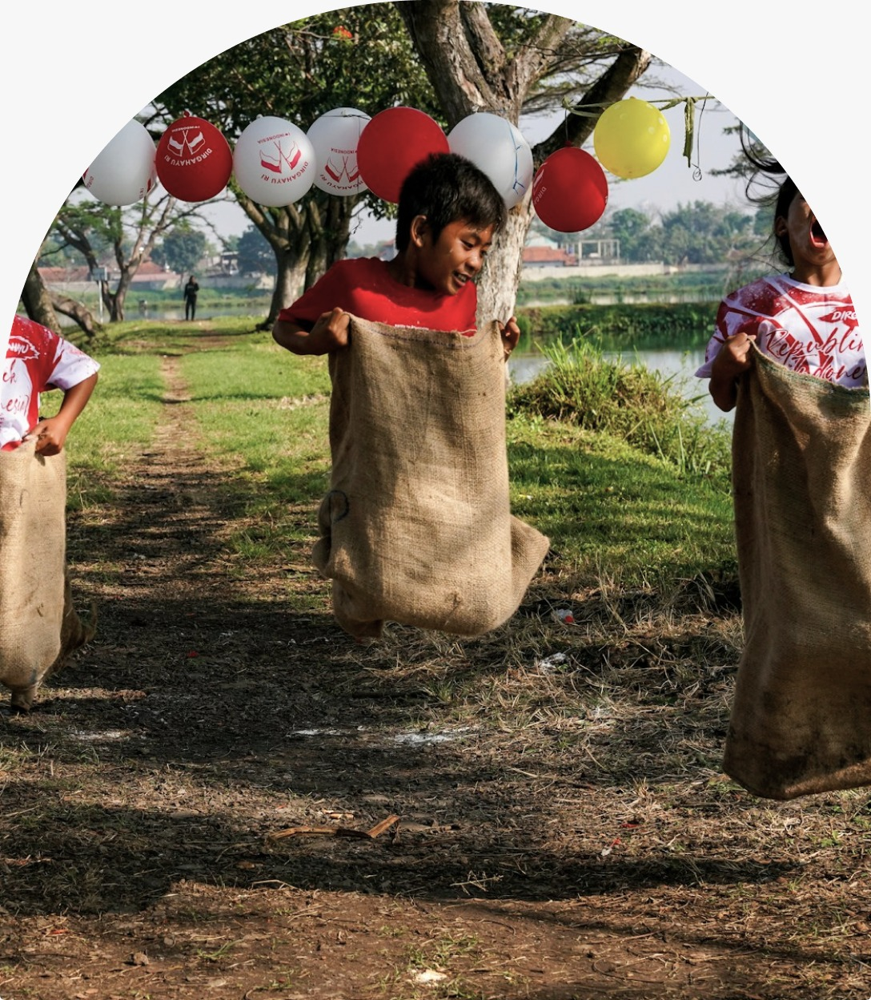

Club Indonesia
Ruang untuk bertemu, bergerak, dan menjaga serunya permainan balap karung tetap hidup di setiap generasi.

SERU BUKAN HANYA SOAL MENANG, TETAPI TENTANG BERGERAK BERSAMA.
Balap karung adalah perlombaan lari dengan kedua kaki dimasukkan ke dalam karung, lalu peserta melompat dari garis mulai menuju garis akhir. Permainan ini populer sebagai perlombaan tradisional, terutama saat perayaan Hari Kemerdekaan Indonesia.
Permainan balap karung telah dikenal sejak masa kolonial Belanda. Dahulu permainan ini dimainkan oleh anak-anak, kemudian semakin luas dan menjadi bagian yang akrab dalam perayaan kemerdekaan.
Kini, balap karung hadir di kampung, sekolah, hingga acara komunitas—membawa semangat sportivitas, kebersamaan, dan keceriaan.
Sumber: Wikipedia Indonesia →Jadwal latihan dan perlombaan perdana sedang kami persiapkan. Pantau ruang ini untuk kabar berikutnya.